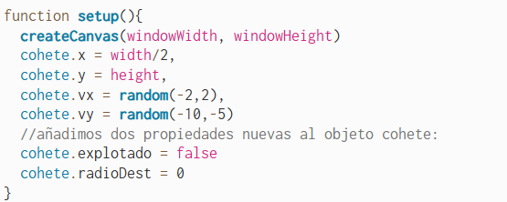
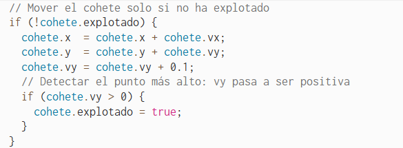
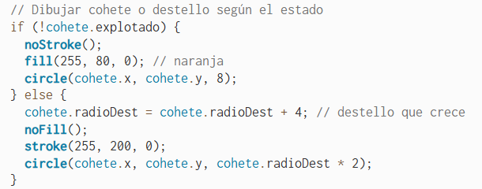

14. Explosión en destello: variable booleana¶
Paso 2/5 de práctica 3 "Fuegos artificiales"
Cuando el cohete alcanza su punto más alto (vy > 0, es decir, empieza
a caer), queremos que explote. La primera versión es un destello simple:
un círculo que crece rápidamente en el punto de explosión.
Dos propiedades nuevas en el objeto¶
Añadimos al objeto cohete dos propiedades nuevas:
explotado— booleano que indica si el cohete ya ha llegado al punto más alto. Empieza enfalse(es decir, no ha explotado) y se pone atruecuandovy > 0.radioDest— radio del círculo de destello. Empieza en0y crece cada fotograma tras la explosión.
{kind=link}

¿Por qué necesitamos un booleano?
draw() se ejecuta decenas de veces por segundo. Sin
cohete.explotado, el programa detectaría vy > 0 en cada
fotograma y intentaría explotar continuamente. El booleano actúa
como interruptor: una vez puesto a true, la explosión solo
ocurre una vez.
La lógica de explosión en draw()¶
En draw(), después de mover el cohete, comprobamos si ha llegado al
punto más alto. Si es así, marcamos explotado = true. Luego
dibujamos el cohete o el destello según el estado:
Mover el cohete solo si no ha explotado:
{kind=link}

Dibujar cohete o destello según el estado:
{kind=link}

Experimenta
Cambia el incremento de radioDest (ahora 4) a 8 o a
2. ¿Cómo afecta a la velocidad de expansión?
Añade una condición para que el destello desaparezca cuando
radioDest supere 80 y el cohete se reinicie:
if (cohete.radioDest > 80) {
cohete.radioDest = 0;
cohete.explotado = false;
cohete.y = height;
cohete.vy = random(-10, -5);
}